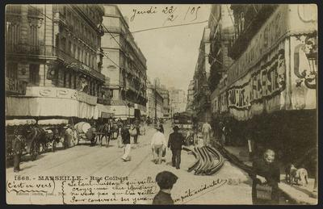
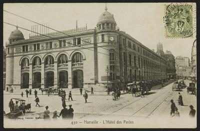

La fondation de Marseille remonte à environ 600 avant J.-C. par des marins et commerçants grecs de Phocée, faisant de la ville l'une des plus anciennes en Europe. Ces fondateurs grecs nommèrent leur établissement Massalia. Située idéalement sur la côte méditerranéenne, la ville se développa rapidement comme un centre de commerce et un carrefour culturel majeur. Elle était un point de rencontre crucial pour les marchands grecs, étrusques, et celtes, facilitant ainsi le commerce de biens précieux comme l'étain, le cuivre, l'or, les épices, le vin et l'huile d'olive. Massalia devint aussi un centre pour la diffusion de la culture et de la philosophie grecques, jouant un rôle fondamental dans l'introduction de la culture grecque en Gaule.
La période romaine de Marseille, débutant avec sa conquête en 49 avant J.-C., fut marquée par des changements significatifs. Bien que la ville ait perdu une partie de son indépendance et de son influence commerciale au profit de villes comme Narbonne, elle réussit à maintenir son statut de centre important pour le commerce et l'éducation. L'administration romaine a apporté des améliorations infrastructurelles, notamment dans la construction de routes et d'aqueducs. Massilia, tout en étant intégrée à l'Empire romain, conserva une grande partie de son héritage et de ses traditions grecques. Cette période a également été témoin d'une romanisation graduelle de la ville et de ses habitants.
Durant le Moyen Âge, Marseille fut souvent le théâtre de conflits et de périodes d'instabilité. Les invasions, les épidémies de peste et les guerres ont freiné son développement. Néanmoins, grâce à son port stratégique, la ville réussit à maintenir un rôle commercial important. La Renaissance fut une période de renouveau pour Marseille. La ville, désormais sous la protection des rois de France, se fortifia et vit la construction de nombreux monuments et édifices symbolisant sa prospérité et son importance stratégique, tels que le Fort Saint-Jean et la Vieille Charité.
Le XIXe siècle a marqué une période de transformation majeure pour Marseille. Avec l'avènement de la Révolution industrielle, la ville a connu une croissance économique significative, stimulée par l'expansion de son port et l'arrivée du chemin de fer. Cette époque a également été marquée par une vague d'immigration importante, transformant la démographie et la culture de la ville. Marseille est devenue un point de transit essentiel pour les voyages vers les colonies françaises, renforçant son rôle dans le commerce international et la navigation.
De nos jours, Marseille se positionne comme une métropole européenne majeure, célèbre pour sa diversité culturelle et son riche patrimoine historique. Le Vieux-Port, au cœur de la ville, demeure un lieu central, entouré de quartiers historiques pleins de charme. Marseille est également un hub de créativité et d'innovation, avec de nombreux musées, galeries, et festivals culturels. Sur le plan économique, elle joue toujours un rôle clé grâce à son port, l'un des plus grands de la Méditerranée, et à ses industries variées. La ville est un exemple vivant de résilience, de diversité culturelle et d'adaptation aux changements à travers les siècles.